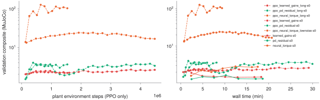

Does model-free training with PPO in the plant, under the same curriculum, observations, parameterizations and objective as the model-based route of Milestone 2, reach the same performance on the same test cases, and at what cost in plant interaction, wall time and tuning effort?
PPO (clipped objective, GAE, 6 epochs per update) runs on 32 parallel plants; an environment step is one network period (10 ms), with the same 5 ms latency and 100 ms history as the learned controller, so trained policies are exported and evaluated through the identical code path. The reward is the negative per-step training loss of ADR 0003, the curriculum has the same three stages (150, 150 and 400 updates of 6400 environment steps), Gaussian exploration acts on the raw network output with a learned state-independent standard deviation (initial 0.3; 0.1 for the warm-started neural torque), and checkpoints are selected on the same 12 validation cases. Neural torque is initialized from the same PD imitation as in Milestone 2. A first, shorter budget (240 updates, neural torque without warm start) is reported as a budget-sensitivity point.
Both routes were validated on the same 12 cases in the plant. PPO consumed 4.5 million plant steps (45 million physics steps) per long run in 21 to 30 minutes; the model-based route consumed no plant interaction and about 20 to 25 minutes of wall time per run for 4 million model steps. Tuning effort: PPO needed three variants for neural torque (no warm start, warm start with exploration 0.1, warm start with exploration 0.02) and still failed; the model-based route needed the warm start and one loss-weight change (ADR 0003).
| Run | Route | Plant environment steps | Physics / model steps | Wall time (min) | Validation evaluations |
|---|---|---|---|---|---|
| ppo_learned_gains_long-s0 | PPO (plant) | 4480000 | 44800000 | 29 | 28 |
| ppo_pd_residual_long-s0 | PPO (plant) | 4480000 | 44800000 | 30 | 28 |
| ppo_neural_torque_long-s0 | PPO (plant) | 4480000 | 44800000 | 21 | 28 |
| ppo_learned_gains-s0 | PPO (plant) | 1536000 | 15360000 | 8 | 12 |
| ppo_pd_residual-s0 | PPO (plant) | 1536000 | 15360000 | 8 | 12 |
| ppo_neural_torque_lownoise-s0 | PPO (plant) | 1536000 | 15360000 | 9 | 12 |
| learned_gains-s0 | BPTT (known model) | 0 (model only) | 4096000 model steps | 18 | 7 |
| pd_residual-s0 | BPTT (known model) | 0 (model only) | 4096000 model steps | 19 | 7 |
| neural_torque-s0 | BPTT (known model) | 0 (model only) | 4096000 model steps | 18 | 7 |

Runs with "long" are the 700-update budget, runs without suffix the 240-update budget; the lownoise run is the neural-torque attempt with exploration standard deviation 0.02. Every PPO run's best validation checkpoint is its first (update 19 or 24), so the reported PPO controllers are essentially the initial policies after a few updates.
| Controller (route) | Seed | Hold | Smooth tracking | Policy-like targets (20 Hz hold) | Step targets | Sustained contact | Contact transitions | Diverged |
|---|---|---|---|---|---|---|---|---|
| learned_gains (PPO) | 0 | 1.95 | 0.50 | 1.11 | 2.62 | 5.09 | 2.45 | 0 |
| learned_gains (PPO) | 0 | 1.93 | 0.49 | 1.10 | 2.58 | 5.10 | 2.41 | 0 |
| pd_residual (PPO) | 0 | 0.71 | 0.43 | 1.33 | 2.33 | 2.19 | 2.96 | 0 |
| pd_residual (PPO) | 0 | 0.62 | 0.35 | 1.29 | 2.25 | 1.97 | 2.71 | 0 |
| neural_torque (PPO) | 0 | 24.17 | 16.99 | 7.40 | 9.32 | 10.27 | 15.44 | 0 |
| neural_torque (PPO) | 0 | 44.14 | 21.02 | 8.66 | 10.34 | 14.12 | 16.15 | 0 |
| neural_torque (PPO) | 0 | 25.92 | 17.78 | 7.49 | 9.93 | 10.85 | 15.25 | 0 |
| learned_gains (BPTT) | 0 | 1.06 | 0.32 | 0.74 | 2.47 | 2.54 | 2.35 | 0 |
| pd_residual (BPTT) | 0 | 0.43 | 0.17 | 1.21 | 1.98 | 2.05 | 2.29 | 0 |
| neural_torque (BPTT) | 0 | 0.93 | 0.43 | 0.97 | 2.20 | 3.87 | 2.12 | 0 |
| PD, shared gains | — | 0.51 | 0.18 | 1.21 | 2.00 | 1.98 | 2.30 | 0 |
| PD, gains tuned per regime | — | 0.22 | 0.09 | 0.56 | 1.88 | 1.70 | 1.38 | 0 |
| Computed torque (privileged) | — | 0.28 | 0.05 | 2.04 | 12.78 | 7.29 | 5.09 | 0 |
| Regime | Metric | PD, shared gains | PD, gains tuned per regime | Computed torque (privileged) | Learned PD gains (PPO) | PD + learned residual (PPO) | Neural torque (PPO) | Learned PD gains (BPTT) | PD + learned residual (BPTT) | Neural torque (BPTT) |
|---|---|---|---|---|---|---|---|---|---|---|
| Hold | Position RMSE (rad) | 0.000574 | 0.000256 (-0.00032*) | 0.000298 (-0.00028*) | 0.003 (0.0024*) | 0.0015 (0.00092*) | 0.138 (0.14*) | 0.00121 (0.00063*) | 0.000557 (-1.8e-05) | 0.00178 (0.0012*) |
| Hold | Peak deflection under 10 N pulse (m) | 0.00443 | 0.00177 (-0.0027*) | 0.00232 (-0.0021*) | 0.0163 (0.012*) | 0.0037 (-0.00073*) | 0.0764 (0.072*) | 0.00932 (0.0049*) | 0.00347 (-0.00096*) | 0.00553 (0.0011*) |
| Smooth tracking | Position RMSE (rad) | 0.00266 | 0.000923 (-0.0017*) | 0.000187 (-0.0025*) | 0.00874 (0.0061*) | 0.00454 (0.0019*) | 0.191 (0.19*) | 0.00528 (0.0026*) | 0.00171 (-0.00095*) | 0.00344 (0.00078*) |
| Smooth tracking | Torque rate RMS (Nm/s) | 48.4 | 41.6 (-6.8*) | 41.7 (-6.7*) | 55.5 (7.1) | 163 (1.1e+02*) | 9.04e+03 (9e+03*) | 56 (7.7*) | 81 (33*) | 263 (2.1e+02*) |
| Policy-like targets (20 Hz hold) | Position RMSE (rad) | 0.0145 | 0.0156 (0.0011) | 0.00623 (-0.0083*) | 0.0409 (0.026*) | 0.014 (-0.00056*) | 0.194 (0.18*) | 0.0112 (-0.0033*) | 0.0142 (-0.0003*) | 0.0293 (0.015*) |
| Policy-like targets (20 Hz hold) | Torque rate RMS (Nm/s) | 2.31e+03 | 619 (-1.7e+03*) | 4.79e+03 (2.5e+03*) | 722 (-1.6e+03*) | 2.57e+03 (2.6e+02*) | 9.93e+03 (7.6e+03*) | 1.29e+03 (-1e+03*) | 2.32e+03 (6.4*) | 957 (-1.4e+03*) |
| Step targets | Position RMSE (rad) | 0.0303 | 0.03 (-0.00027*) | 0.362 (0.33*) | 0.0442 (0.014*) | 0.0304 (0.00012*) | 0.181 (0.15*) | 0.0304 (0.00016) | 0.0301 (-0.00017*) | 0.037 (0.0067*) |
| Step targets | Settling time after step (s) | 0.157 | 0.124 (-0.033*) | 0.733 (0.58*) | 0.361 (0.2*) | 0.201 (0.044*) | 0.749 (0.59*) | 0.263 (0.11*) | 0.145 (-0.012*) | 0.269 (0.11*) |
| Step targets | Torque rate RMS (Nm/s) | 2.02e+03 | 2.07e+03 (50*) | 2.77e+03 (7.5e+02*) | 1.27e+03 (-7.5e+02*) | 2.25e+03 (2.3e+02*) | 9.18e+03 (7.2e+03*) | 1.85e+03 (-1.7e+02*) | 2.05e+03 (30*) | 1.4e+03 (-6.2e+02*) |
| Sustained contact | Tangential tool error during slide (m) | 0.00712 | 0.00576 (-0.0014*) | 0.0226 (0.016*) | 0.0116 (0.0045*) | 0.00762 (0.0005*) | 0.0674 (0.06*) | 0.00884 (0.0017*) | 0.00691 (-0.00021*) | 0.00772 (0.0006*) |
| Sustained contact | Normal force std in contact phase (N) | 6.25 | 5.55 (-0.69*) | 24.6 (18*) | 8.91 (2.7*) | 5.84 (-0.41) | 3.96 (-2.3) | 7.22 (0.97*) | 6.72 (0.48*) | 9.22 (3*) |
| Sustained contact | Contact losses of 5 ms or more during contact phase (-) | 0.125 | 0 (-0.12) | 1.44 (1.3*) | 42.8 (43*) | 2.03 (1.9) | 2.71 (2.6*) | 4.12 (4*) | 0 (-0.12) | 23.8 (24*) |
| Contact transitions | Peak normal force (N) | 91.8 | 31.7 (-60*) | 179 (87*) | 75.6 (-16*) | 97.4 (5.5) | 156 (64*) | 88.3 (-3.6) | 89.9 (-1.9*) | 67.7 (-24*) |
| Contact transitions | Impulse in first 100 ms of contact (N s) | 6.46 | 0.852 (-5.6*) | 7.65 (1.2*) | 4.56 (-1.9*) | 6.63 (0.17) | 4.94 (-1.5*) | 4.57 (-1.9*) | 6.26 (-0.19*) | 4.16 (-2.3*) |
| Contact transitions | Tracking recovery after release (s) | 0.0428 | 0.0578 (0.015*) | 0.103 (0.061*) | 0.124 (0.081*) | 0.0803 (0.038*) | 0.892 (0.85*) | 0.0506 (0.0078*) | 0.0413 (-0.0015*) | 0.0651 (0.022*) |
| Contact transitions | Position RMSE (rad) | 0.0061 | 0.00876 (0.0027*) | 0.0174 (0.011*) | 0.0097 (0.0036*) | 0.01 (0.0039*) | 0.105 (0.099*) | 0.0061 (-2.9e-06) | 0.00596 (-0.00014*) | 0.008 (0.0019*) |
If PPO is pursued further: evaluate the deterministic policy on full episodes inside the training loop and use that for early stopping, scale exploration per parameterization (gains and residual tolerate noise, torque does not), and include the validation-protocol disturbances in the environment. Given its plant-interaction cost and the results, the model-based routes remain the primary line.